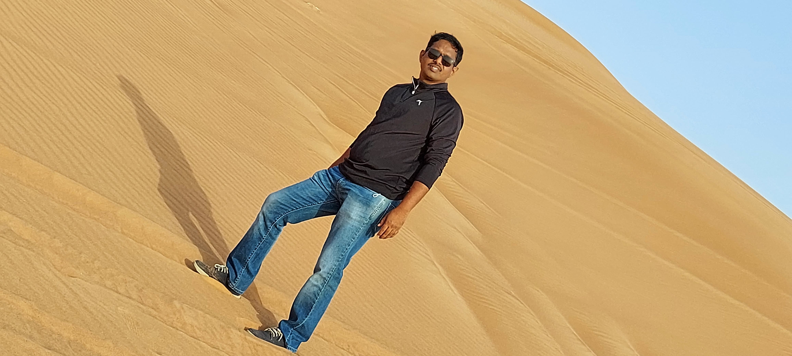
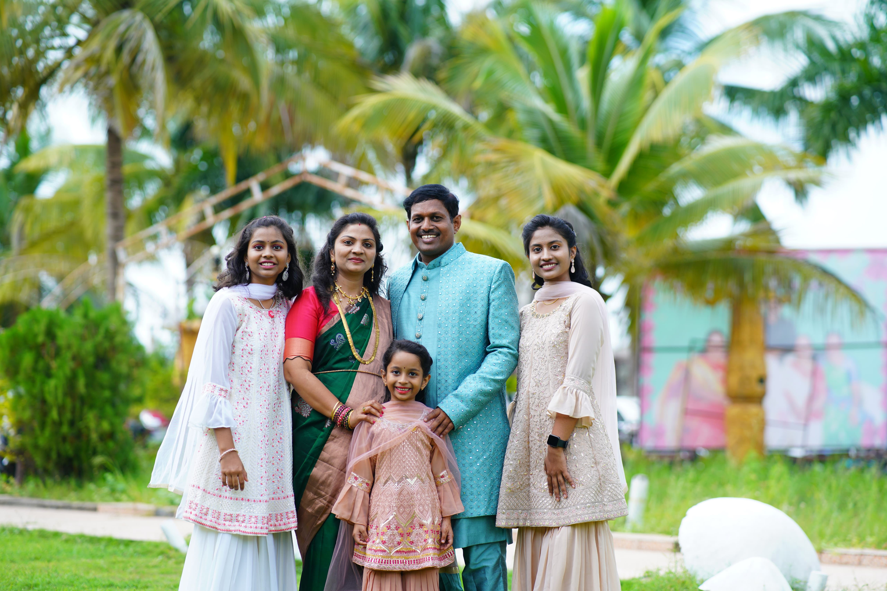

|  | |
1. My father's name is Kunal Shankergoud.
2. He is my real hero.
3. He is 45 years old.
4. He is a businessman by profession.
5. My father is a kind person.
6. He always helps me in my studies.
7. He loves all the members of the family.
8. He is the head of our family.
9. He is everything to me.
10.I love him very much.
|
1.My mother's name is Mrudula
2.She is my inspiration.
3.She is 40 year old.
4.She is a homemaker by profession.
5.She always helps me in my studies.
6.She lover all the members of the family.
7.She is everything to me.
8.I love her very much.
|
1.My sister name is Samyama.
2.She is 16 year old.
|
1.My sister name is Rajvika.
2.She is 8 year old.
|

I wanted to take a moment to express how much I miss each and every one of you. Since arriving in Canada three months ago for my studies, not a day has gone by without thoughts of our time together flooding my mind. I miss our conversations, our laughter, and the warmth of our home. Most of all, I miss the love and support that you all provide. but being away from my two younger sisters, Samyama and Rajvika, has been the hardest part. You guys are not just siblings; you are my companions in laughter and play. Whether it’s watching TV together or engaging in playful activities, our time together is always filled with joy and warmth. Their presence brings light to my life, and I miss them dearly every day. Despite the distance, our bond remains strong, and I eagerly await the moments when we can be together again, sharing laughter and creating new memories. Though the distance may be vast, know that you are always in my heart. I look forward to the day when we can be together again, sharing in the joys of family life. Until then, please take care of yourselves, and know that I love you all dearly.